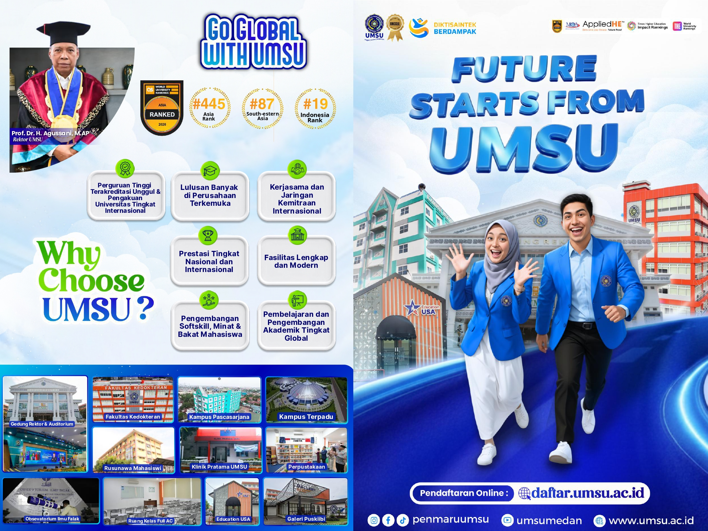
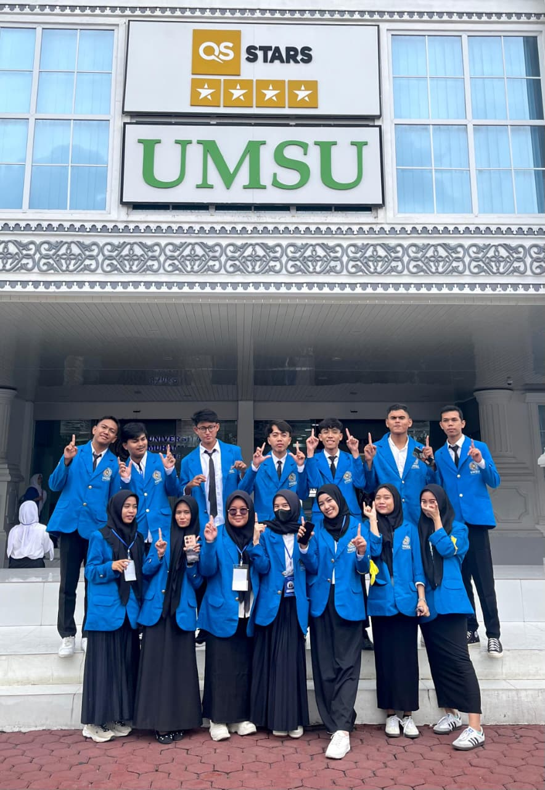
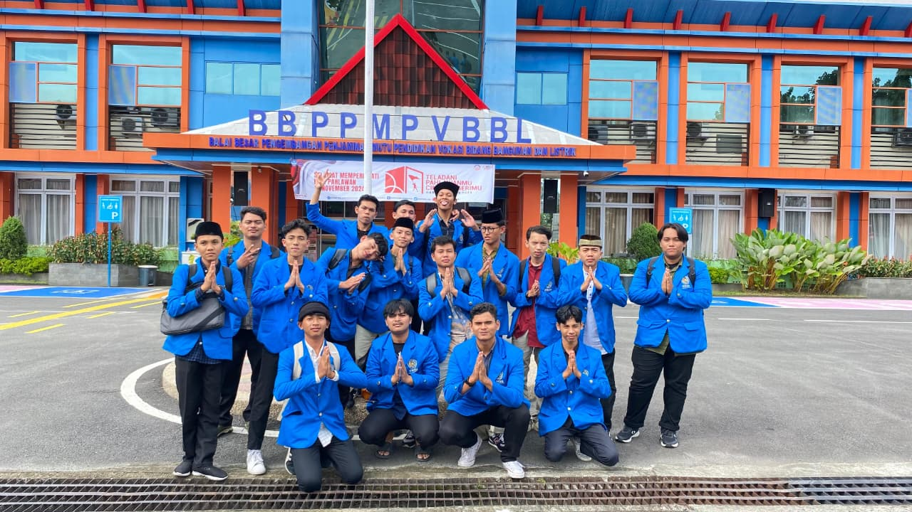
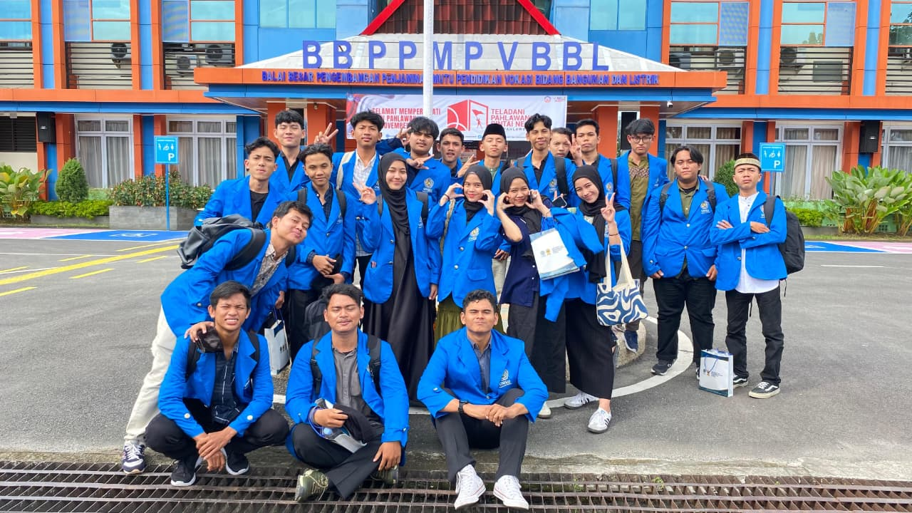
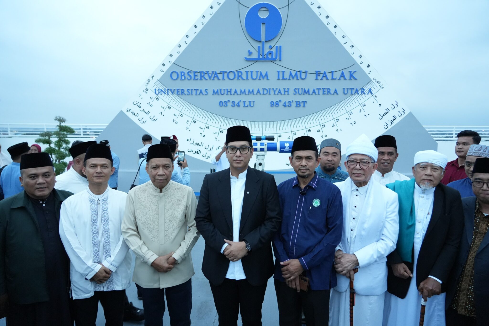
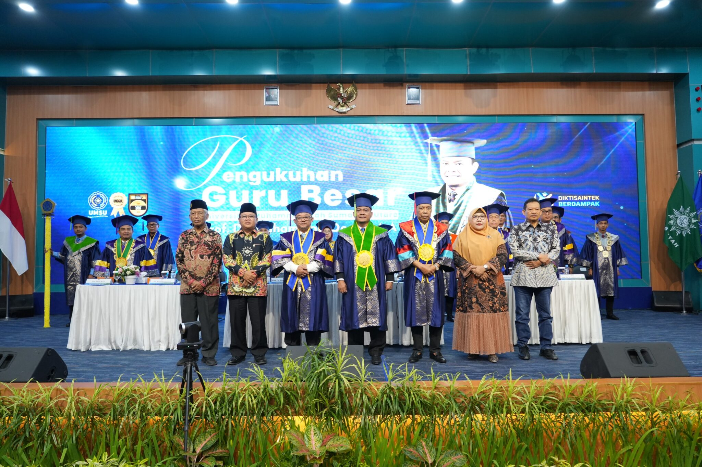

SELAMAT DATANG DI
UNIVERSITAS MUHAMMADIYAH SUMATERA UTARA
UMSU Adalah Universitas Pertama dan Satu-satunya PTS Akreditasi Unggul di Medan - Sumatera Utara"
0
Mahasiswa Aktif
0
Fakultas
0
Program Studi
0
Alumni
Berita Terbaru

Pemko Medan Gandeng OIF UMSU Pantau Hilal Awal Ramadan 1447 Hijriah
Pemerintah Kota Medan kembali menggandeng Observatorium Ilmu Falak (OIF) Universitas Muhammadiyah Sumatera Utara untuk pemantauan hilal awal Ramadan 1447 H.
Baca Selengkapnya
UMSU Kukuhkan Guru Besar Studi Islam
Menteri Pendidikan Dasar dan Menengah RI Prof. Abdul Mu’ti menyoroti krisis kebenaran di era digital saat menghadiri pengukuhan guru besar UMSU.
Baca SelengkapnyaProgram Pendidikan
UMSU menawarkan berbagai jenjang pendidikan berkualitas tinggi untuk masa depanmu.
Sarjana (S1)
15 Fakultas dengan 75+ program studi terakreditasi nasional dan internasional.
Lihat Program →Pascasarjana (S2 / S3)
Program magister dan doktoral dengan riset serta publikasi jurnal internasional.
Lihat Program →Profesi & Vokasi
Program profesi dokter, apoteker serta D3 berbasis kompetensi industri.
Lihat Program →
Sambutan Rektor
Prof. Dr. Agussani, M.AP.
Universitas Muhammadiyah Sumatera Utara terus berkomitmen menghasilkan lulusan yang tidak hanya unggul secara akademik, tetapi juga memiliki karakter kuat dan siap menghadapi tantangan global.
Dengan semangat inovasi dan kolaborasi, UMSU akan terus berkembang menjadi universitas kelas dunia yang memberi manfaat nyata bagi masyarakat dan bangsa Indonesia.
Baca SelengkapnyaKontak Kami
Informasi lokasi dan kontak Universitas Muhammadiyah Sumatera Utara.
Alamat
Jl. Kapten Mukhtar Basri No.3, Medan
info@umsu.ac.id
Telepon
(061) 6622400